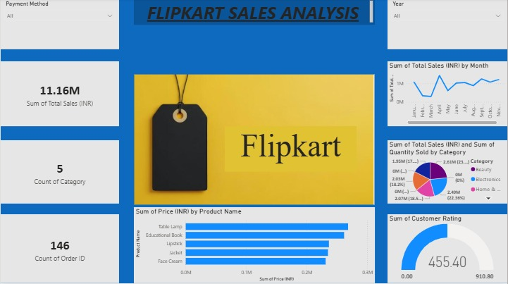

I am Isra Ameena K M, an Integrated M.Sc. Computer Science student specializing in Artificial Intelligence and Machine Learning, with a strong foundation in software development and data-driven technologies. I am proficient in programming languages including Python, C, and C++, and have hands-on experience working with SQL databases. Additionally, I have completed a certification in Power BI, enabling me to analyze data and create insightful visualizations. Beyond my technical expertise, I possess strong leadership, coordination, organizational, and public speaking skills, which allow me to collaborate effectively in team environments and contribute to successful project execution. I am passionate about continuous learning and eager to apply my knowledge to develop innovative and impactful technology solutions.
Designed and developed a website to support athletes who are recovering from serious injuries. The main idea of the project is to help them explore new career options and opportunities beyond sports, so they can plan their future in a different direction if needed. This project was created as part of the TinkerHub Campus Technology Community, where I worked with a team to come up with ideas and build the application together. Through this experience, I learned how to collaborate with others, share ideas, and turn a problem into a useful solution

Developed an interactive Power BI dashboard to analyze and visualize Flipkart sales data. The dashboard helps users understand sales performance by displaying key insights such as total sales, monthly sales trends, product category performance, customer ratings, and order details. It includes interactive charts and filters, making it easy to explore the data and identify patterns. Through this project, I gained hands-on experience in data cleaning, data visualization, dashboard design, and using Power BI to turn raw data into meaningful business insights that support better decision-making.

Created an HR Data Analysis Dashboard using Power BI to study employee data in an easy way. The dashboard shows important details like total number of employees, department-wise distribution, salary trends, gender ratio, and average salary using simple charts. It helps to quickly understand how employees are spread across departments and how salaries vary in the company. This makes it easier for HR teams to view data clearly and take better decisions based on it. Through this project, I learned how to turn raw data into useful visuals using Power BI.
Email: israameena01@email.com
Phone: +91 6238062179
Location: Kerala, India